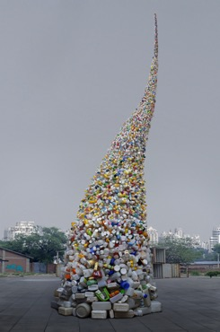

MAURA AXELROD’S recent documentary film, Maurizio Cattelan: Be Right Back (2016), is a portrait of an elusive and controversial artist, one who has consistently turned manufactured scandals — a miniaturized sculpture of Hitler praying over here, an oversized middle finger in front of a stock exchange over there — into handsome paydays, whether in his native Italy, his adopted New York City, or many other places in between. Cattelan cuts a captivating figure on-screen: he is handsome, sly, seemingly in on the joke that is the global art market. It is easy to see why his works have been popular not just with curators and collectors, but also with museum-goers. Cattelan talks openly about his art, without a whole lot of pretense and without relying on academic jargon, either. How refreshing — he’d be perfect for the Guggenheim!
Only halfway through Axelrod’s film does the unsuspecting viewer begin to have doubts. Doesn’t the talking head on-screen seem a little young to have produced all these works, to have staged all these exhibitions? Don’t his words seem, well, a little rehearsed? The illusion is eventually revealed. It turns out Cattelan has been utilizing a surrogate for years, a stand-in who makes public appearances and sits for interviews in his stead. Naturally, the documentary would be no different. Suddenly, everything about Maurizio Cattelan: Be Right Back seems artificial, constructed. The artist has left the building. Maybe he was never even in it in the first place.
This trick has been pulled before (the 2010 Banksy film Exit Through the Gift Shop is an immediate and recognizable precursor). Still, it says something meaningful not just about our ambivalent relation to contemporary art but also about our complicated relation to truth and reality these days. If everyone agrees that the international art market is a fiction, a confidence game of global proportions, what else can artists do but find new things to fictionalize, including, perhaps most of all, themselves? Similarly, if everyone agrees that politics is, above all else, a performance, why should it come as a surprise that we continue to elect actors — “reality television” actors, no less — to high offices?
There is a growing consensus today about the dangers of living in a post-truth era, about the need for a new realism, which might cut through all of the artifice — all of the nonsense — and set things straight. The philosopher Santiago Zabala will have none of it. In his new book, Why Only Art Can Save Us: Aesthetics and the Absence of Emergency, Zabala rejects this rappel à l’ordre and suggests that now is precisely not the time to banish the poets from the city. It is from the artists, not the philosopher-kings, he thinks, that we have the most to learn.
But how can we define art today, and just who counts as an artist? Borrowing from Arthur C. Danto’s final, influential work, What Art Is (2013), Zabala insists that art no longer needs to be propped up by the preoccupations of aesthetics, that is, by talk of beauty, harmony, or composition. As Danto pointed out and as Zabala is eager to reaffirm, art today is primarily about “meaning,” “truth,” and “interpretation.” In other words, art has become existential, or, as Zabala wants to call it, postmetaphysical. “The truth of art no longer rests in representations of reality,” he says, “but rather in an existential project of transformation.” Art is now generative, not imitative:
Rather than points of arrival for consumers’ identification, contemplation, and realization of beauty, works of art are points of departure to change the world, a world that needs new interpretations instead of better descriptions.
Those interpretations can come from any and all angles: from singer-songwriters and sculptors, from performance artists, painters, and playwrights. A Tom Waits song works just as well as a public installation of melting, miniature ice sculptures by Néle Azevedo. Transformative art can be made from discarded plastic bottles (as in the work of Wang Zhiyuan) or repurposed materials from the slums of Mumbai (as in the work of Hema Upadhyay). There are no aesthetic criteria underpinning Zabala’s artistic catalog because aesthetic considerations are beside the point (aesthetics, in his opinion, “must be overcome”). If he focuses primarily on visual pieces, it is only because they are, he explains, “easier to reproduce in a book.”

Thrown to the wind （2010） 400x1150cm
While there may be no formal constraints on Zabala’s existential conception of art, there are certainly thematic ones. His is not a general theory of art. He is concerned primarily with what we might call activist art, art that unsettles “our logical, ethical, and aesthetic assessments of reality” so as to open up new avenues of action. It is art that, through “alterations” and “disruptions,” demands “interpretation, response, and intervention instead of contemplation.” For the most part, this translates into art that confronts social, political, and environmental issues: climate change, the unrelenting proliferation of plastics, the exponential growth of urban slums. Why Only Art Can Save Us examines art that is in touch with the contemporary world, a world that, however you assess such things, is surely in crisis.
Zabala’s title harkens back to the crisis-talk of an earlier generation. It alludes to a 1966 interview Martin Heidegger — a philosopher-king of a different era — gave to the German magazine Der Spiegel, which was published only after his death. In it, Heidegger bemoaned the sad state of modern existence, which he thought was wholly determined by the global spread of modern technology, “a force whose scope in determining history can scarcely be overestimated.” “We don’t need any atom bomb,” he claimed, a little bizarrely, because the “uprooting of man” had already been accomplished. Asked if there was any way philosophy — or ordinary people, for that matter — might get us out of this world-historical mess, Heidegger gave an infamous reply: “Only a god can save us.”
This cryptic phrase has kept the commentators busy for the last 40 years, but Zabala is not necessarily interested in joining the fray. Too many thinkers have taken Heidegger’s invocation of divinity “too literally,” he says, on the very first page of his book, and quickly moves on. As if to reinforce the idea, his book’s dust jacket reproduces an image of Cattelan’s controversial sculpture The Ninth Hour (1999), which depicts Pope John Paul II struck down by a meteorite. There’s no dithering over the divine here. Zabala wants to answer in the affirmative the question that Heidegger evaded with talk of an absent god: Surely there is something we can do.
Why Only Art Can Save Us is more about survival than salvation, which makes sense, since the problems we face have only increased since Heidegger’s day and waiting for some kind of deus ex machina solution to them seems both pointless and irresponsible. Like Heidegger, Zabala also worries about “the global technological organization of the world,” but he is far more willing than his predecessor to talk specifics, to engage contemporary issues rather than make pronouncements about them from on high. To be sure, there is a lot of Heidegger in the opening and concluding pages of Why Only Art Can Save Us, more than some people might care to endure. But most of Zabala’s book is taken up with detailed discussions of current social and political issues, not philosophical treatises.
Zabala confronts an overwhelming array of contemporary nightmares. Read in succession, they resemble a roll call of clear and present dangers: war, financial crisis, global warming, environmental degradation in the forms deforestation and maritime pollution, poverty, genocide, and, underlying all these, social inequality. In the digital age, we are all too aware of these looming threats. We’ve seen the pictures and read the accounts. We know about Rwanda, about Iraq and Afghanistan. We’ve heard about the trash gyres in the Pacific and the slums in Rio, Lagos, and Mumbai. We observe as neoliberalism guts whatever vestiges of social democracy still exist in the world. Nevertheless, we carry on in our day-to-day lives as if these were all distant disasters, emergencies elsewhere. We bury our heads in the sands of status updates and Instagram posts.
Like the artworks it discusses — including pieces not just by Azevedo, Wang, and Upadhyay, but also by kennardphillipps, Jota Costa, Filippo Minelli, Peter McFarlane, Mandy Barker, Michael Sailstorfer, Jennifer Karady, Alfredo Jaar, and Jane Frere — Zabala’s book is a challenge to our sense of complacency. It seeks not to rescue us from the existential threats we now face, but, paradoxically, to rescue us “into them,” to “call into question our comfortable existence.” This is a notion Zabala pulls out of Heidegger’s infamous Black Notebooks — a disaster in their own right, but never mind that for now. Zabala takes from Heidegger the idea that we live not so much in an age of crisis, an age of exception or emergency, but in an age distinguished primarily by the denial of emergency. The death and destruction we see on-screen each and every day mask a deeper crisis, an “absence of emergency,” which prevents us from ever daring to change things.
A better way to describe this “absence of emergency,” as Zabala, channeling Heidegger, calls it throughout Why Only Art Can Save Us, might be to speak of the emergency behind the never-ending emergencies of the present; the long-term threats hidden beneath the rhetoric of catastrophe that animates the 24-hour news cycle, to which we are tethered by newsfeeds, tweets, and updates. So focused are we on the curated, ever-changing images of devastation — the hurricanes and earthquakes, the terror attacks and torch-lit marches — that we miss the underlying story lines, which unfold off-screen, without generating much notice or concern. How much of the world gets cropped out of the reposted picture? How much content fails to be reduced to 140 characters or less? In his Heideggerian lingo, Zabala refers to all of this omitted material as the “remains” or the “remnants of Being.” In plainer language, we can call it the marginalized, the oppressed, and the poor: the landfills of toxic e-waste; the survivors and victims of seemingly endless occupations, dispossessions, and military campaigns; the “urban discharges” in the slums.
The status quo is not sustainable, but it persists. A number of the artworks analyzed in Why Only Art Can Save Us call attention to the ways in which we are, as Zabala puts it, “framed within a global infrastructure in which alterations are almost impossible.” A 2010 installment of Minelli’s multiyear Contradictions project, for example, splashed the Twitter logo onto the walls of a factory farm full of, as Zabala puts it, “identical-looking turkeys.” What might easily be dismissed as an all-too-easy prank is actually, in the philosopher’s view, a thought-provoking intervention:
These turkeys are identical not simply because their reproduction and growth are technologically managed but also because they are framed by an environment that pretends to be neutral, that pretends to be a simple growth medium, but that actually relies upon the active elimination of individual difference in service to industrial process.
This work, like so many of the ones analyzed in the book, raises a number of unsettling questions. How much of our world is shaped by the parameters of social media platforms? How much of our public discourse is subject to routine homogenization? And there’s this to consider, too: how much of our civilization is fueled by the cruelties of factory farms, which are largely hidden from view?
Philosophers often turn to art when they have a political point to make. It was no accident, Zabala suggests, that Heidegger began drafting what eventually became “The Origin of the Work of Art,” his influential and oft-cited essay, “right after his political adventure of 1933 as rector of the University of Freiburg, in other words, after the failure and error implied by this political involvement.” Whether or not “The Origin of the Work of Art” shows that Heidegger learned anything from his “political adventure” is debatable, of course, but this nod to historical and political context reminds us that aesthetics — the loftiest of philosophical subfields — has never truly escaped the gravitational pull of material, mundane concerns. Aesthetics should not be thought of as an escape from politics, merely a reworking of it.
Why Only Art Can Save Us is no different. It is written from the perspective of a “militant hermeneuticist,” one who has adopted a stance “in favor of the weak.” “Militant hermeneuticist” is an apt term, one that puts a decidedly philosophical spin on existential, interventionist artworks that might fall under the category of a fully engaged “emergency aesthetics.” Zabala borrows the term from Gianni Vattimo, with whom he wrote Hermeneutic Communism: From Heidegger to Marx (2011). That book ambitiously sought to reframe not just the philosophy of interpretation, but also the public discourse of the present. By politicizing hermeneutics while simultaneously “hermeneuticizing” politics, Vattimo and Zabala rewrote the agenda for thoughtful activism. They did not retreat into the easy embrace of realism. Instead, they reworked Marx’s famous 11th thesis on Feuerbach into a kind of hermeneutic call to arms: “[T]he philosophers have only described the world in various ways; the moment now has arrived to interpret it.”
Why Only Art Can Save Us continues the political struggle. “Art discloses the remains of Being,” Zabala writes, “the emergency at the margins of framed democracies.” Art “exposes Being’s ontological condition (weak, discarded, and forgotten) for those who are politically prepared to interpret it.”
I got a chance to discuss these ideas with Zabala a little over a year ago, at what seemed like an unlikely place for a conversation about Heideggerian aesthetics: the newly instituted Museum of Contemporary Art in Yinchuan, China. It was an international event. Artists and academics had traveled from around the world to take part in a conference held in conjunction with Yinchuan MOCA’s inaugural biennale. Ai Weiwei’s invitation to participate in the exhibition had been rescinded by governmental authorities not long beforehand, most likely because the artwork he had proposed for the show was to be made of building materials salvaged from the rubble of the 2008 earthquake in Sichuan Province: a devastating event made deadlier by lax oversight and substandard construction practices. Among the dead — as Ai and other activists pointed out — were thousands of schoolchildren who perished when their hastily erected, government-built schoolrooms collapsed in on them. To unearth this emergency is, surely, the project of art as Zabala conceives it.
Without being there — and without his name even being mentioned, it seemed to me — Ai thrust the entire conference into an emergency that Beijing insisted did not exist. His absence had become a powerful presence. After reading about his nonexistent artwork, it seemed impossible to walk through Yinchuan’s brand new museum, its glitzy high-rise hotels, or its countless new apartment blocks and business parks, without thinking twice about their integrity, both figuratively and literally. It seemed impossible to settle for the facade. As part of China’s “One Belt One Road” Initiative, which seeks to reimagine the old silk road for the 21st century, Yinchuan is being rebranded into a Las Vegas–style hub for the kinds of conferences, conventions, and expos that make the contemporary world go round: an out-of-the-way town to which businessmen from Abu Dhabi to Shanghai will flock, bringing with them connections, contracts, and cash. Never mind the emergency, it all seems to say, come buy some art. Zabala’s book rightly urges us to pay attention to Ai’s absent remains instead.
Martin Woessner is associate professor of History & Society at The City College of New York’s Center for Worker Education.